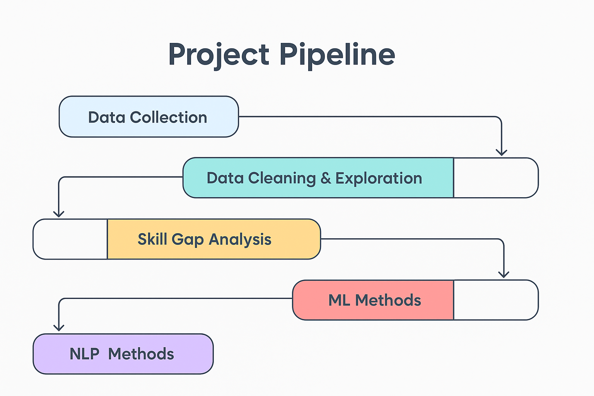
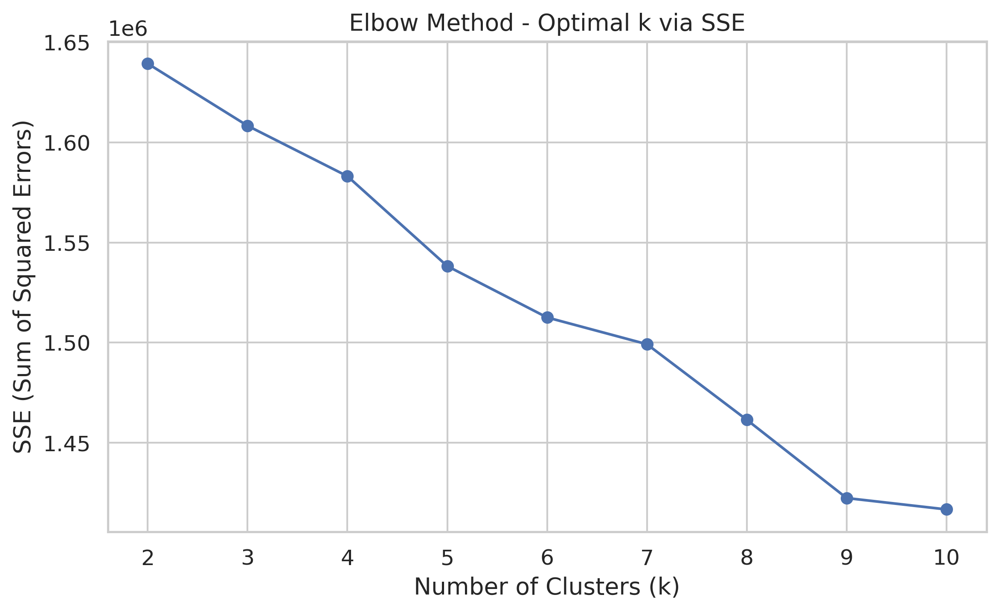
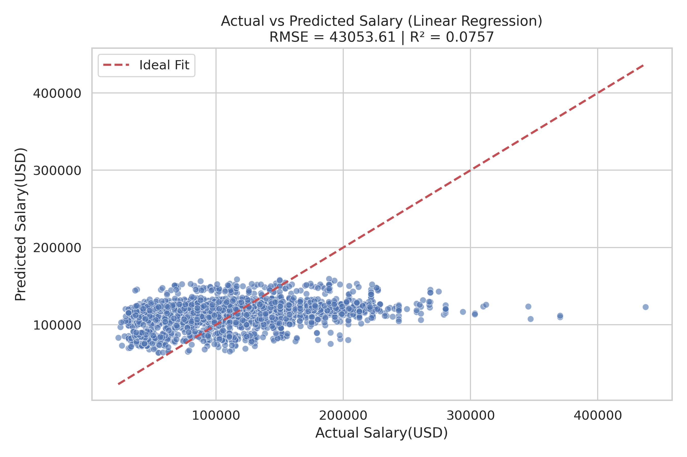
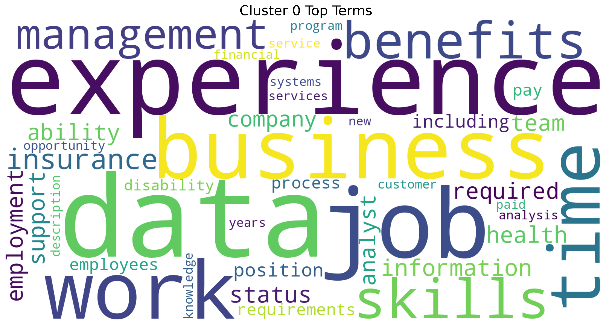
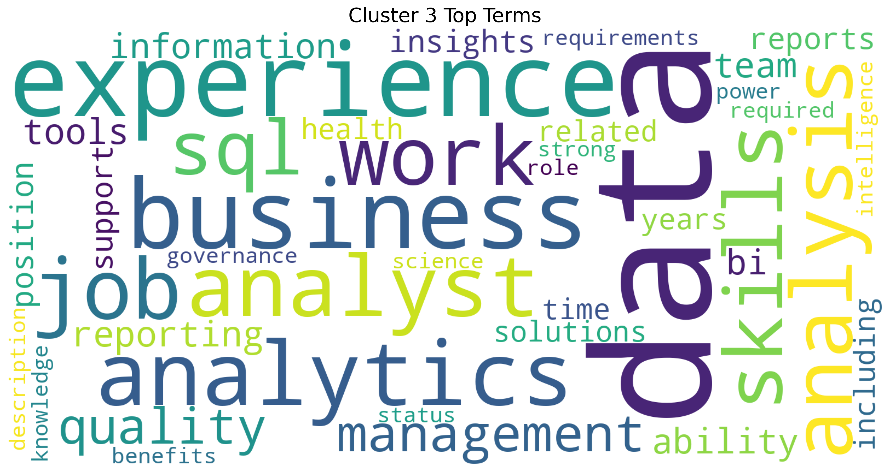
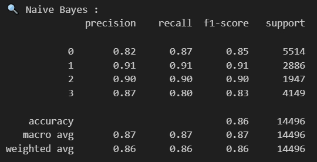
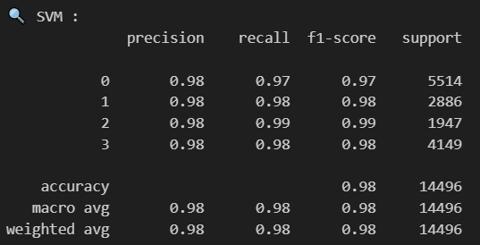
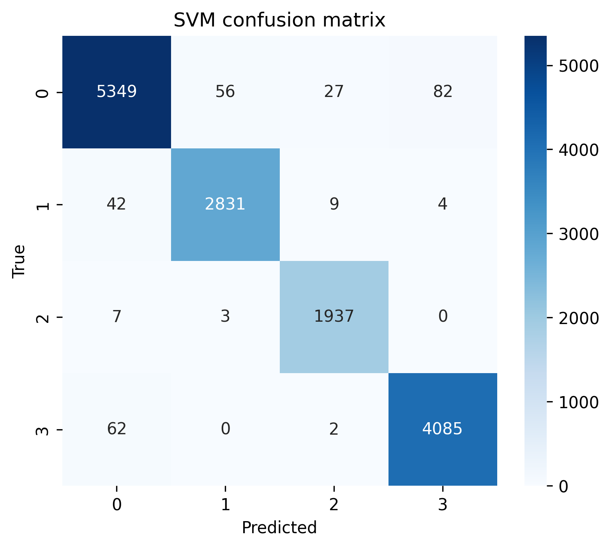

The field of data science continues to be one of the most lucrative and dynamic career paths in 2024. As businesses increasingly rely on data-driven decision-making, the demand for skilled data scientists has grown across industries, including technology, finance, healthcare, and e-commerce. However, salary trends in data science are influenced by a variety of factors, such as emerging technologies, economic conditions, geographic location, and skill specialization. This research aims to analyze salary patterns in data science in 2024, providing insights into compensation disparities and growth opportunities within the industry.
Several key trends make this topic particularly relevant in 2024:
AI and Automation Influence: The rapid advancement of AI and automation tools has shifted the skill demands in data science, leading to changes in salary structures for specialized roles such as AI engineers and machine learning researchers.
Remote Work and Globalization: The continued rise of remote work has impacted salary expectations, with companies hiring from a broader talent pool across different geographical regions, leading to potential salary standardization or disparities.
Economic Factors: Economic conditions, including inflation and recession fears, have influenced hiring trends and salary negotiations in the tech sector, causing fluctuations in compensation levels.
Experience and Specialization Impact: Salaries in data science vary significantly based on experience level and specialization ( deep learning, big data analytics, or cloud computing). Understanding these variations helps professionals navigate career growth strategies.
Industry-Specific Variations: Different industries offer varying compensation packages for data science roles, with sectors such as finance and healthcare often providing higher salaries compared to non-tech industries.

Project Pipeline
0.2 Expected Findings
Through this research, we anticipate identifying key patterns in data science salaries, such as:
An increase in salaries for AI and machine learning specialists due to growing demand.
Potential stagnation or decline in entry-level data science salaries due to an influx of new professionals entering the field.
A widening salary gap between regions due to remote work policies and cost-of-living differences.
Industry-specific salary trends, where certain sectors may offer higher compensation based on their reliance on data-driven insights.
1 References
title: “Data Cleaning & Exploration” subtitle: “Comprehensive Data Cleaning & Exploratory Analysis of Job Market Trends” date-modified: today date-format: long
Calculates the duration of each job posting by finding the difference between its expiration and posted dates. Converts the POSTED and EXPIRED columns from string to date format. Update DURATION if it is null with the number of days between EXPIRED and POSTED, otherwise, the existing value is kept.
Cleans up multiple text columns in the DataFrame by extracting and formatting the content originally enclosed in double quotes. Columns to clean contain those string values often wrapped in brackets, double quotes, or cluttered with newlines and extra spaces. For each of these columns, using regular expressions to remove square brackets, line breaks, and excess whitespace, formats comma-separated items with a proper space after each comma, and removes all double quotes, resulting in cleaner, more readable text entries across the specified columns.
Code
# 2. Remove square brackets, line breaks, spaces, and replace the formatting between commas with “,”, then remove the double quotesfrom pyspark.sql.functions import regexp_replace, colcolumns_to_clean = ["SOURCE_TYPES", "SOURCES", "URL", "EDUCATION_LEVELS_NAME", "SKILLS", "SKILLS_NAME", "SPECIALIZED_SKILLS", "SPECIALIZED_SKILLS_NAME", "CERTIFICATIONS", "CERTIFICATIONS_NAME", "COMMON_SKILLS", "COMMON_SKILLS_NAME", "SOFTWARE_SKILLS", "SOFTWARE_SKILLS_NAME", "CIP6", "CIP6_NAME", "CIP4", "CIP4_NAME", "CIP2", "CIP2_NAME", "LIGHTCAST_SECTORS", "LIGHTCAST_SECTORS_NAME"] for col_name in columns_to_clean: df = df.withColumn(col_name, regexp_replace(regexp_replace(regexp_replace(col(col_name), r'[\[\]\n\s]+', ''), r'","', '", '), r'"', ''))
2.3 3. Clean the education level column
Cleans the EDUCATION_LEVELS column by extracting and retaining only the numeric portion of each entry. Removing surrounding text or symbols, leaving just the numeric education level in the column. This makes the data more consistent and easier to work with for analysis or modeling purposes.
Cleans the LOCATION column, ensures that all location information appears on one line, and removes curly braces, resulting a cleaner, more uniform LOCATION column for reading and analyzing
Similarly as in updating duration, fills in the value with the number of days between MODELED_EXPIRED and POSTED, helps standardize and complete the duration data for modeled job postings
Standardizes the values in the REMOTE_TYPE_NAME column to ensure consistency in describing remote work types. Replaces values None and Not Remote with On-Site, changes Hybrid Remote to Hybrid, and keeps Remote as is. Simplify and unify the classification of job postings based on work location
Although filling missing values is a common data cleaning strategy, we chose not to do it in this case to preserve the integrity and accuracy of the original dataset. Imputing numerical fields like salary with the median could distort salary distributions and mask meaningful patterns or outliers. Similarly, replacing missing categorical fields with “Unknown” may introduce noise and reduce the reliability of downstream analysis, especially in modeling or clustering tasks. Additionally, dropping columns with over 50% missing data might lead to the loss of potentially valuable or unique information. By keeping the missing values intact, we allow for more transparent analysis and leave room for context-aware handling in specific use cases.
2.8 8. Reason of not dropping unnecessary columns
The dataset is overly complex, with more than 100 different variables and columns. Therefore, we have taken the approach of directly extracting a specific column or columns of the data to be analyzed to generate a dataframe and analyze it. This way we don’t need to remove unwanted columns.
2.9 9. Save the cleaned data
Code
# save data# 1. use coalesce(1) to merge all partitions into one filedf.coalesce(1).write.option("header", "true").csv("data/lightcast_cleaned_temp")# 2. Find and rename the generated filesimport osimport shutil# get pathgenerated_file_path ='data/lightcast_cleaned_temp'for filename in os.listdir(generated_file_path):if filename.startswith('part-'): # find file# rename and move shutil.move(os.path.join(generated_file_path, filename), 'data/lightcast_cleaned.csv')# delete useless foldershutil.rmtree(generated_file_path)
title: “Exploratory Data Analysis” date-modified: today date-format: long
import pandas as pdimport plotly.express as pximport plotly.io as piopio.renderers.default ="vscode"from pyspark.sql import SparkSessionfrom pyspark.sql.functions import split, explode, col, regexp_replace, transform, isnanspark = SparkSession.builder.appName("LightcastCleanedData").getOrCreate()# reload cleaned datadf_cleaned = spark.read.option("header", "true").option("inferSchema", "true").option("multiLine","true").csv("data/lightcast_cleaned.csv")# show datasetdf_cleaned.show(5)
3 Exploratory Data Analysis (EDA)
3.1 1. Comparison of salary between remote and on-site work (box chart)
Code
import pandas as pdimport plotly.express as px# Collecting data with .collect()data = df_cleaned.select("REMOTE_TYPE_NAME", "SALARY").collect()# Converting data into a format suitable for plotting (e.g., a list)data_list = [(row["REMOTE_TYPE_NAME"], row["SALARY"]) for row in data]# Create Pandas DataFrameimport pandas as pddf_pandas = pd.DataFrame(data_list, columns=["REMOTE_TYPE_NAME", "SALARY"])fig = px.box(df_pandas, x="REMOTE_TYPE_NAME", y="SALARY", title="Salary Comparison: Remote vs. On-Site Jobs", category_orders={"REMOTE_TYPE_NAME": ["On-Site", "Hybrid", "Remote"]}, labels={"REMOTE_TYPE_NAME": "Job Type", "SALARY": "Salary ($)"})fig.write_html("./images/REMOTE_TYPE_NAME&SALARY.html")fig.show()
This box plot titled “Salary Comparison: Remote vs. On-Site Jobs” shows the salary distribution across three job types: On-Site, Hybrid, and Remote. Overall, the median salaries are relatively similar, with Remote roles showing a slightly higher median than the others. On-Site positions have the widest salary range and the highest number of extreme outliers, indicating greater variability in pay. Hybrid roles display a more compact distribution, while Remote jobs also include several high-salary outliers, suggesting they can be competitively compensated. This suggests that Remote and Hybrid positions are not at a financial disadvantage and may even offer slightly better pay in some cases.
3.2 2. Salary by region (map)
Code
# STATE_NAME change to .abbrimport us# Collecting data with .collect()data = df_cleaned.select("STATE_NAME", "SALARY").collect()# Converting data into a format suitable for plotting (e.g., a list)data_list = [(row["STATE_NAME"], row["SALARY"]) for row in data]# Create Pandas DataFrameimport pandas as pddf_pandas = pd.DataFrame(data_list, columns=["STATE_NAME", "SALARY"])df_pandas["STATE_NAME"] = df_pandas["STATE_NAME"].apply(lambda x: us.states.lookup(x).abbr if pd.notna(x) and us.states.lookup(x) else x)# Verify conversionimport plotly.express as pxfig = px.choropleth(df_pandas, locations="STATE_NAME", locationmode="USA-states", color="SALARY", hover_name="STATE_NAME", scope="usa", title="Average Salary by State", color_continuous_scale="Viridis", labels={"SALARY": "Average Salary ($)"})fig.write_html("./images/STATE_NAME_SALARY.html")fig.show()
The map titled “Average Salary by State” shows clear differences in average salaries across the U.S., with brighter colors indicating higher salaries. States like California, Washington, and Colorado stand out with higher average salaries, likely due to strong tech industries and higher living costs. In contrast, southern states such as Mississippi and Alabama appear in darker shades, reflecting lower average pay. Northeastern states like New Jersey and Massachusetts also show relatively high salaries, which aligns with their concentration of finance, healthcare, and education sectors. Overall, the map provides a clear and human-readable visualization of how location influences earning potential across the country.
3.3 3. The highest paying job
Code
# Collecting data with .collect()data = df_cleaned.select("LIGHTCAST_SECTORS_NAME", "SALARY").collect()# Converting data into a format suitable for plotting (e.g., a list)data_list = [(row["LIGHTCAST_SECTORS_NAME"], row["SALARY"]) for row in data]# Create Pandas DataFrameimport pandas as pddf_pandas = pd.DataFrame(data_list, columns=["LIGHTCAST_SECTORS_NAME", "SALARY"])fig = px.bar(df_pandas.groupby("LIGHTCAST_SECTORS_NAME")["SALARY"].mean().sort_values(ascending=False).head(10), title="Top 10 Industries with Highest Salaries", labels={"LIGHTCAST_SECTORS_NAME": "Industry", "SALARY": "Salary ($)"})fig.write_html("./images/LIGHTCAST_SECTORS_NAME&SALARY.html")fig.show()
This bar chart titled “Top 10 Industries with Highest Salaries” highlights the most lucrative sectors based on average salary. The top-paying industries are heavily concentrated in Cybersecurity, Artificial Intelligence, Data Privacy/Protection, and Green Jobs, often appearing in overlapping combinations such as “GreenJobs:Enabled, Cybersecurity” or “Cybersecurity, DataPrivacy/Protection”. These sectors consistently show average salaries above $140,000, with some nearing $155,000. The dominance of tech-driven and security-related fields in the top ranks reflects the high demand for specialized talent in emerging technologies and the growing importance of data protection and sustainability initiatives.
3.4 4. Salary comparison between AI and non-AI positions
Code
import plotly.express as px# Define AI-related keywords based on LIGHTCAST_SECTORS_NAMEai_keywords = ["Artificial Intelligence", "Machine Learning", "Data Science","Cybersecurity", "Computational Science", "Deep Learning","Data Privacy", "Computer Vision", "Natural Language Processing","Big Data", "Cloud Computing", "Quantum Computing", "Robotics"]# Collecting data with .collect()data = df_cleaned.select("LIGHTCAST_SECTORS_NAME", "SALARY").collect()# Converting data into a format suitable for plotting (e.g., a list)data_list = [(row["LIGHTCAST_SECTORS_NAME"], row["SALARY"]) for row in data]# Create Pandas DataFrameimport pandas as pddf_pandas = pd.DataFrame(data_list, columns=["LIGHTCAST_SECTORS_NAME", "SALARY"])#Classify AI-related vs. Non-AI industriesdf_pandas["AI_RELATED"] = df_pandas["LIGHTCAST_SECTORS_NAME"].apply(lambda x: "AI-related"ifany(keyword instr(x) for keyword in ai_keywords) else"Non-AI")# Show counts of AI vs. Non-AI jobsprint(df_pandas["AI_RELATED"].value_counts())fig = px.box(df_pandas, x="AI_RELATED", y="SALARY", title="AI-related vs. Non-AI Industries Salary Comparison", labels={"AI_RELATED": "Industry Type", "SALARY": "Salary ($)"}, color="AI_RELATED")fig.write_html("./images/AI_RELATED&SALARY.html")fig.show()
This boxplot reveals that AI-related industries generally offer higher median salaries compared to non-AI sectors. The interquartile range for AI-related positions is positioned higher on the salary scale and appears slightly wider, suggesting greater variability in mid-range compensation. While non-AI fields show more extreme outliers at the upper end (several blue dots above $400k), AI-related roles display a higher concentration of salaries within the $100k-$200k range, with fewer but still notable outliers. The minimum salary for AI-related positions also appears higher than for non-AI jobs, indicating better entry-level compensation. This visualization confirms the financial premium typically associated with AI expertise, though exceptional compensation exists in both categories.
Code
import pandas as pdimport plotly.express as pximport plotly.io as piopio.renderers.default ="vscode"from pyspark.sql import SparkSessionfrom pyspark.sql.functions import split, explode, col, regexp_replace, transform, isnanspark = SparkSession.builder.appName("LightcastCleanedData").getOrCreate()# Reload processed datadf_cleaned = spark.read.option("header", "true").option("inferSchema", "true").option("multiLine","true").csv("data/lightcast_cleaned.csv")# View data structures and samplesdf_cleaned.show(5)
4 K-Means
4.1 Build model and compute SSE
Here we run a clustering analysis on our cleaned dataset to explore how different job roles might naturally group together based on salary, employment type, and a few categorical factors like job duration, education level, remote options, and state. First, we convert the numeric fields to the right type, and encode the categorical ones so the model can understand them. Then we bring everything together into a single feature set, standardize it to keep things fair across scales, and try out different numbers of clusters using K-Means. For each value of k, we fit the model and record the SSE, which gives us a sense of how tight the clusters are. Finally, we plot those values to create an Elbow chart, which helps us visually decide the most reasonable number of clusters to use moving forward.
Code
from pyspark.ml.clustering import KMeansfrom pyspark.ml.feature import VectorAssembler, StandardScaler, StringIndexer, OneHotEncoderfrom pyspark.ml import Pipelinefrom pyspark.ml.evaluation import ClusteringEvaluatorfrom pyspark.sql.functions import colfrom pyspark.sql.types import DoubleTypeimport matplotlib.pyplot as plt# Select fields for clusteringnumeric_cols = ["DURATION", "SALARY"]categorical_cols = ["MIN_EDULEVELS_NAME", "EMPLOYMENT_TYPE_NAME", "REMOTE_TYPE_NAME", "STATE_NAME"]df_kmeans = df_cleaned.select(numeric_cols + categorical_cols).dropna()# Data type conversionfor col_name in numeric_cols: df_kmeans = df_kmeans.withColumn(col_name, col(col_name).cast(DoubleType()))# Handling categorical variablesindexers = [StringIndexer(inputCol=c, outputCol=f"{c}_idx", handleInvalid='skip') for c in categorical_cols]encoders = [OneHotEncoder(inputCol=f"{c}_idx", outputCol=f"{c}_vec") for c in categorical_cols]encoded_categorical = [f"{c}_vec"for c in categorical_cols]# Characteristic bindingassembler = VectorAssembler( inputCols=numeric_cols + encoded_categorical, outputCol="raw_features")# Standardizationscaler = StandardScaler(inputCol="raw_features", outputCol="features", withStd=True, withMean=True)# Iterate over different values of k and compute SSEcost = [] for k inrange(2, 11): kmeans = KMeans(k=k, seed=688, featuresCol="features") pipeline = Pipeline(stages=indexers + encoders + [assembler, scaler, kmeans])# fit model model_kmeans = pipeline.fit(df_kmeans)# Get K-Means clustering model stage kmeans_data = model_kmeans.stages[-1] sse = kmeans_data.summary.trainingCost cost.append((k, sse)) print(f"k = {k}, SSE = {sse:.2f}")# Plotting the Elbow Chartk_vals, sse_vals =zip(*cost) plt.figure(figsize=(8, 5))plt.plot(k_vals, sse_vals, marker='o')plt.xlabel("Number of Clusters (k)")plt.ylabel("SSE (Sum of Squared Errors)")plt.title("Elbow Method - Optimal k via SSE")plt.grid(True)plt.tight_layout()plt.savefig("images/elbow.png", dpi=300, bbox_inches='tight')plt.show()

Elbow Chart
Looking at this elbow chart, we went with k = 3 instead of k = 9, even though the chart shows k = 9 has a lower error rate. K = 9 would give us too many clusters to make sense of practically. It’s mathematically better with lower error, but having 9 different groups would overcomplicate our analysis and might not add meaningful insights. With k = 3, we get a simpler model that’s easier to interpret and explain to stakeholders.
4.2 Cluster validation
We go on capturing the cluster each data point falls into. We focus on comparing the resulting clusters with the actual employment type to see how well our unsupervised model aligns with that real-world label. We encode the employment types into numeric labels using LabelEncoder, and then use two metrics, Normalized Mutual Information (NMI) and Adjusted Rand Index (ARI), to quantify the similarity between our clusters and the actual labels. These scores give us a sense of whether the model found meaningful groupings or just jumbled everything together, while a higher score means better alignment. So this helps us validate how useful the clustering might actually be.
After clustering, we wanted to get a clearer, more intuitive sense of what the clusters actually look like. So we built a bunch of scatter plots to visually explore the patterns. We pull each key variables, job duration, education level, employment type, remote status, and state, then compare them against salary while highlighting different clusters one at a time. For categorical variables, we do a bit of behind-the-scenes magic to convert them into numbers for plotting, and we use a jitter function to keep overlapping points from stacking on top of each other. Each row in the grid of plots represents a variable, and each column highlights a different cluster, making it easier to spot what sets one group apart from the others. This helps us interpret the clusters more meaningfully—like whether one cluster tends to include higher salaries or is dominated by remote jobs.
Code
import matplotlib.pyplot as pltimport seaborn as snsimport numpy as np# Preparing datapandas_df = df_kmeans.select("DURATION", "SALARY", "MIN_EDULEVELS_NAME", "EMPLOYMENT_TYPE_NAME", "REMOTE_TYPE_NAME", "STATE_NAME", "cluster").toPandas()# Setting variables and cluster IDsvars_to_plot = ["DURATION", "MIN_EDULEVELS_NAME", "EMPLOYMENT_TYPE_NAME", "REMOTE_TYPE_NAME", "STATE_NAME"]highlight_clusters = [0, 1, 2] # Each row shows the highlighting of three clustersnum_clusters = pandas_df["cluster"].nunique()# Setting the contrasting colorpalette = sns.color_palette("Set1", n_colors=num_clusters)color_map = {cid: palette[cid] for cid inrange(num_clusters)}def jitter(arr, strength=0.2):return arr + np.random.uniform(-strength, strength, size=arr.shape)# Create the plotfig, axes = plt.subplots(len(vars_to_plot), len(highlight_clusters), figsize=(38, 38)) # Increase image size to prevent overlapaxes = axes.reshape(len(vars_to_plot), len(highlight_clusters))for row_idx, var inenumerate(vars_to_plot): is_numeric = np.issubdtype(pandas_df[var].dtype, np.number)# Prepare the mapping in advance if it's category variableifnot is_numeric: cat_series = pandas_df[var].astype("category") categories =dict(enumerate(cat_series.cat.categories))for col_idx, highlight_cid inenumerate(highlight_clusters): ax = axes[row_idx, col_idx]for cid inrange(num_clusters): subset = pandas_df[pandas_df["cluster"] == cid] x = subset[var] if is_numeric else jitter(subset[var].astype("category").cat.codes) # Convert category variables to category type. Each category value is then mapped to a unique integer code. y = subset["SALARY"] alpha =0.05if cid != highlight_cid else0.9 zorder =2if cid == highlight_cid else1 ax.scatter(x, y, color=color_map[cid], alpha=alpha, edgecolor='k', s=40, zorder=zorder) ax.set_title(f"{var} vs SALARY\nHighlight: Cluster {highlight_cid}", fontsize=11) ax.set_xlabel(var)if col_idx ==0: ax.set_ylabel("SALARY")else: ax.set_ylabel("")# Set x-axis labels to category namesifnot is_numeric: ax.set_xticks(list(categories.keys())) ax.set_xticklabels(list(categories.values()), rotation=45, ha='right')# Overall layoutplt.tight_layout()plt.savefig("images/kmeans.png", dpi=300, bbox_inches='tight')plt.show()
K-means
4.4 Separate image display
We generate individual plots for each variable we’re analyzing, one plot per variable, showing how salary relates to that variable across the different clusters. For each variable like duration, education, or remote type, we highlight each cluster one at a time (so 3 plots per variable), which really helps us zoom in and understand what makes each cluster unique in relation to salary. And we save all these charts in the image folder.
4.4.1 K-Means of Duration
Code
import os# Create a save directorysave_dir ="images/kmeans"os.makedirs(save_dir, exist_ok=True)for row_idx, var inenumerate(vars_to_plot): is_numeric = np.issubdtype(pandas_df[var].dtype, np.number)ifnot is_numeric: cat_series = pandas_df[var].astype("category") categories =dict(enumerate(cat_series.cat.categories)) fig, axes = plt.subplots(3, 1, figsize=(20, 20))for col_idx, highlight_cid inenumerate(highlight_clusters): ax = axes[col_idx]for cid inrange(num_clusters): subset = pandas_df[pandas_df["cluster"] == cid] x = subset[var] if is_numeric else jitter(subset[var].astype("category").cat.codes) y = subset["SALARY"] alpha =0.03if cid != highlight_cid else0.9 zorder =2if cid == highlight_cid else1 ax.scatter(x, y, color=color_map[cid], alpha=alpha, edgecolor='k', s=40, zorder=zorder) ax.set_title(f"{var} vs SALARY\nHighlight: Cluster {highlight_cid}", fontsize=12) ax.set_xlabel(var)if col_idx ==0: ax.set_ylabel("SALARY")else: ax.set_ylabel("")ifnot is_numeric: ax.set_xticks(list(categories.keys())) ax.set_xticklabels(list(categories.values()), rotation=45, ha='right') plt.tight_layout()# Show and save figures save_path = os.path.join(save_dir, f"kmeans_highlight_{row_idx}_{var}.png") plt.savefig(save_path, dpi=300, bbox_inches='tight') plt.show()
K-means DURATION
These three scatterplots show the scatterplot of job duration versus salary for each of the three clusters. It seems to be a general trend that as job duration exceeds the 60-80 month mark, the salary distribution becomes more diverse and possibly lower. This suggests that longer positions do not necessarily guarantee higher salaries. A notable feature is the vertical concentration of data points around certain duration values, particularly at the 60-month mark, which may represent common contract durations or career milestone points where people change roles. The highest salaries (up to $500,000) are mostly found in roles with durations of less than 60 months, suggesting that some short- to medium-term roles may be particularly lucrative.
For job seekers, these results suggest that maximizing pay may actually require changing positions strategically every 3-5 years rather than holding a position for a long period of time. The data suggests that very long tenures of more than 80 months provide diminishing pay returns. Candidates may want to focus on industries or positions in higher-paying clusters, especially those with higher pay in the early and mid-term tenure ranges. Additionally, five years appears to be a critical point in career evaluation to either negotiate a significant salary increase or consider job hopping to maintain salary momentum.
4.4.2 K-Means of Education Levels
K-means MIN_EDULEVELS_NAME
These are scatter plots comparing education levels and salary across the three clusters, and we can see distinct patterns in how education relates to compensation within each group.
In Cluster 0 (top plot), there’s a wide distribution of salaries across all education levels. Master’s degree holders show the highest salary ceiling, with some earning up to $500,000, though most fall between $50,000-$250,000. Associate degree holders surprisingly show strong earnings, often comparable to those with Master’s degrees. Bachelor’s degree holders and high school graduates show somewhat lower median salaries, which challenges traditional assumptions about education returns.
Cluster 1 (middle plot) shows a different pattern, with Bachelor’s degree holders and those without formal education labels being particularly prevalent. The salary range is more compressed, typically between $50,000-$200,000, with fewer high outliers. This cluster might represent industries or roles where specific skills matter more than degree level.
Cluster 2 (bottom plot) shows a striking concentration of Associate degree holders with competitive salaries between $50,000-$250,000, with some reaching close to $300,000. This suggests this cluster represents a segment of the job market where specialized two-year programs are highly valued, possibly in technical or healthcare fields.
For job seekers, these findings suggest that the value of different education levels varies significantly depending on which job segment you’re targeting. Associate degrees appear particularly valuable in Cluster 2, while advanced degrees show the highest potential in Cluster 0. Rather than pursuing higher education indiscriminately, job seekers might benefit from identifying which cluster aligns with their career goals and then obtaining the education level that shows the strongest returns within that specific segment of the job market.
4.4.3 K-Means of Employment types
K-means EMPLOYMENT_TYPE_NAME
These scatter plots show how salary relates to employment type across three different clusters.
In Cluster 0 (top plot), full-time positions clearly dominate with the highest salary potential, including outliers reaching $500,000. Full-time roles show a wide salary range from around $50,000 to $300,000, with much higher median and maximum values than other employment types. Part-time positions (< 32 hours) and part-time/full-time flexible roles show similar salary distributions but with notably lower ceilings, mostly staying below $200,000, though a few outliers exist.
Cluster 1 (middle plot) is predominantly composed of full-time positions, with fewer data points in the part-time categories. The full-time positions in this cluster show a more compressed salary range, typically between $50,000 and $200,000. There are significantly fewer part-time workers represented in this cluster, suggesting it might represent industries or roles where full-time employment is standard.
Cluster 2 (bottom plot) again shows a strong concentration of full-time workers, but with a distinctive salary pattern. The full-time positions here show a particularly dense concentration between $50,000 and $200,000, with some reaching near $300,000. There are very few part-time workers in this cluster, and those present show lower salaries than their full-time counterparts.
For job seekers, these findings highlight that full-time employment consistently offers the strongest salary potential across all clusters. The substantial salary gap between full-time and other employment types suggests that transitioning from part-time to full-time work could yield significant financial benefits. For those who need flexibility, it appears that part-time/full-time flexible arrangements sometimes offer slightly better compensation than strictly part-time roles.
4.4.4 K-Means of Remote types
K-means REMOTE_TYPE_NAME
Here are the relationship between remote work arrangements and salary across three distinct job market clusters.
In Cluster 0 (top plot), on-site positions show the highest salary potential, with several roles reaching $400,000-$500,000 that aren’t matched in other work arrangements. On-site roles also display the widest salary distribution, ranging from about $30,000 to $500,000. Remote positions show a similar distribution pattern but with a slightly lower ceiling, typically topping out around $300,000. Hybrid positions have the most compressed salary range and the lowest median, suggesting hybrid arrangements might be more common in moderate-paying industries or roles.
Cluster 1 (middle plot) shows a strong concentration of on-site and remote positions with fewer hybrid roles. The salary distributions are more compressed compared to Cluster 0, with most positions across all work arrangements falling between $50,000 and $200,000. Notably, remote positions in this cluster show fairly competitive compensation compared to on-site roles, suggesting this cluster might represent industries where remote work is well-established and valued.
Cluster 2 (bottom plot) also shows a predominance of on-site positions, with salary ranges typically between $50,000 and $200,000 and some reaching close to $300,000. Remote positions appear to have a slightly lower salary ceiling in this cluster, and hybrid roles are relatively uncommon, likely representing industries where physical presence is more highly valued.
For job seekers, these findings suggest that on-site positions still offer the highest salary potential overall, especially in industries represented by Cluster 0. However, remote work doesn’t necessarily mean sacrificing compensation significantly, particularly in Cluster 1 where remote salaries are quite competitive. Job seekers prioritizing work-life balance through remote arrangements might focus on sectors represented in Cluster 1, while those seeking maximum earning potential might target on-site roles in Cluster 0. Hybrid arrangements, though offering flexibility, generally show lower compensation across all clusters and might be more strategic as a negotiation point after securing a higher-paying on-site role.
4.4.5 K-Means of different states
K-means STATE_NAME
These scatter plots reveal fascinating geographical salary patterns across all U.S. states for three distinct job market clusters, showing how location influences compensation within different employment segments.
In Cluster 0 (top plot), we see considerable salary variation across states, with the highest-paying positions ($400,000-$500,000) appearing in high-cost states like California, New York, and Tennessee. States such as Colorado, Illinois, and Texas also show strong salary ranges. Most states display a wide salary distribution, typically ranging from $50,000 to $250,000, with fairly consistent median values across locations. This suggests that top-tier compensation is available in multiple regions, though the highest outliers concentrate in traditional economic centers.
Cluster 1 (middle plot) shows an interesting concentration of data points in Alabama, suggesting this cluster might represent industries or roles particularly prevalent in that state. Cluster 2 (bottom plot) shows a more scattered distribution across states, with positions typically ranging from $50,000 to $200,000. Certain states like California, Colorado, and South Carolina show stronger representations in this cluster, but with fewer extremely high-paying outliers compared to Cluster 0. The salary distributions appear somewhat more compressed, suggesting these positions may have more standardized compensation structures regardless of location.
For job seekers, these findings suggest that geographical flexibility can significantly impact earning potential, particularly for roles in Cluster 0. While high-cost-of-living states like California and New York show the highest salary ceilings, states like Colorado and Texas also offer competitive compensation in many clusters. Job seekers might strategically target positions in Cluster 0 in states with lower living costs but strong salary potential, potentially maximizing real earnings. Those constrained to specific regions should research which cluster predominates in their location and target industries and roles aligned with the cluster showing the strongest local compensation profile.
5 Multiple linear regression
5.1 Build model
We’re building a multivariate linear regression model to predict salary, by preprocessing everything carefully before the modeling step. First, we pick the features we believe are relevant, like job duration, education level, employment type, remote status, and state. Since machine learning models can’t handle raw strings, we convert all the categorical fields into numerical format using indexing and one-hot encoding. Then, we combine everything (including the duration field) into a single feature vector and standardize the scale, so each variable has a fair influence on the model. We split the data into training and testing sets, build a pipeline to keep things clean and reproducible, and train a linear regression model. Finally, we evaluate how well our model performs using R² and RMSE, giving us a solid sense of how much of the salary variance we’re capturing—and how far off we might be on average.
Code
# Multiple Linear Regressionfrom pyspark.ml.feature import VectorAssembler, StandardScaler, StringIndexer, OneHotEncoderfrom pyspark.ml.regression import LinearRegressionfrom pyspark.ml import Pipelinefrom pyspark.ml.evaluation import RegressionEvaluatorfrom pyspark.sql.types import DoubleTypefrom pyspark.sql.functions import col# Select fieldlr_df = df_cleaned.select("DURATION", "MIN_EDULEVELS_NAME", "EMPLOYMENT_TYPE_NAME", "REMOTE_TYPE_NAME", "STATE_NAME", "SALARY").dropna()# Numeric column type conversionlr_df = lr_df.withColumn("DURATION", col("DURATION").cast(DoubleType()))# Category field codescategorical_cols = ["MIN_EDULEVELS_NAME", "EMPLOYMENT_TYPE_NAME", "REMOTE_TYPE_NAME", "STATE_NAME"]indexers = [StringIndexer(inputCol=col_name, outputCol=col_name +"_IDX", handleInvalid="keep") for col_name in categorical_cols]encoders = [OneHotEncoder(inputCol=col_name +"_IDX", outputCol=col_name +"_OHE") for col_name in categorical_cols]# Feature splicingassembler = VectorAssembler( inputCols=["DURATION"] + [col +"_OHE"for col in categorical_cols], outputCol="assembled_features")# Standardizationscaler = StandardScaler(inputCol="assembled_features", outputCol="features")# Build modellr = LinearRegression(featuresCol="features", labelCol="SALARY")# Divide the training test settrain_data, test_data = lr_df.randomSplit([0.8, 0.2], seed=688)train_data = train_data.na.drop()test_data = test_data.na.drop()# Build the pipelinepipeline = Pipeline(stages=indexers + encoders + [assembler, scaler, lr])model = pipeline.fit(train_data)predictions = model.transform(test_data)# Evaluate resultevaluator_r2 = RegressionEvaluator(labelCol="SALARY", predictionCol="prediction", metricName="r2")evaluator_rmse = RegressionEvaluator(labelCol="SALARY", predictionCol="prediction", metricName="rmse")
5.2 Results and analysis
With two evaluation metrics: R² (how well the model explains salary variation) and RMSE (average prediction error), we create scatter plot is created with actual salaries on the x-axis and predicted on the y-axis, with a red dashed line representing a perfect prediction. And it helps visually assess model accuracy.
Code
pdf = predictions.select("SALARY", "prediction").toPandas()r2 = evaluator_r2.evaluate(predictions)rmse = evaluator_rmse.evaluate(predictions)import matplotlib.pyplot as pltimport seaborn as snsplt.figure(figsize=(9, 6))sns.scatterplot(x="SALARY", y="prediction", data=pdf, alpha=0.6)plt.plot([pdf.SALARY.min(), pdf.SALARY.max()], [pdf.SALARY.min(), pdf.SALARY.max()], 'r--', linewidth=2, label='Ideal Fit') plt.xlabel("Actual Salary(USD)")plt.ylabel("Predicted Salary(USD)")plt.title(f"Actual vs Predicted Salary (Linear Regression)\nRMSE = {rmse:.2f} | R² = {r2:.4f}")plt.grid(True)plt.legend()plt.tight_layout()plt.savefig("images/predicted_vs_actual.png", dpi=300)plt.show()

Predicted VS Actual
This scatter plot compares actual vs. predicted salaries using a linear regression model. The blue dots represent the predictions, while the red dashed line indicates the ideal scenario where predicted salary perfectly matches the actual salary. From the plot, we observe that most predictions are clustered in a narrow range, underestimating high salaries and overestimating lower ones. The model’s R² value of 0.0757 indicates it explains only about 7.6% of the variance in salaries, suggesting limited predictive power. The RMSE of 43053.61 further highlights the large average error in predictions. These insights imply that the model struggles to capture the complexity of salary determination and may benefit from including more relevant features, nonlinear modeling, or feature engineering.
Code
import pandas as pdimport plotly.express as pximport plotly.io as piopio.renderers.default ="vscode"from pyspark.sql import SparkSessionfrom pyspark.sql.functions import split, explode, col, regexp_replace, transform, isnanspark = SparkSession.builder.appName("LightcastCleanedData").getOrCreate()# Reload processed datadf_cleaned = spark.read.option("header", "true").option("inferSchema", "true").option("multiLine","true").csv("data/lightcast_cleaned.csv")# View data structures and samplesdf_cleaned.show(5)
6 Extracting Key Terms from Job Descriptions Using TF-IDF
We start by extracting the job description text from the “BODY” column and convert it into a Pandas DataFrame for easier text processing. To clean it up a bit, we remove line breaks so that the text becomes more uniform and easier to analyze. Then, we apply TF-IDF (Term Frequency-Inverse Document Frequency), which helps us identify and quantify the most important words across all descriptions, ignoring common English stop words. This transformation converts the text into a numerical format, capturing how relevant each word is in a particular document compared to the whole collection.
Code
from sklearn.feature_extraction.text import TfidfVectorizer# Convert to Pandas DataFrame, taking only BODY columnsbody_df = df_cleaned.select("BODY").dropna().toPandas()# Clear textbody_df["BODY"] = body_df["BODY"].str.replace(r'\n|\r', ' ', regex=True)# TF-IDF extracttfidf_vectorizer = TfidfVectorizer(max_features=1000, stop_words='english')X_tfidf = tfidf_vectorizer.fit_transform(body_df["BODY"])
7 Visualizing Job Clusters with Word Clouds
We applied KMeans clustering to the TF-IDF features of job descriptions to group similar postings into four distinct clusters. Each job was assigned a cluster label, which we then used to explore the top terms that defined each group. By extracting the most influential keywords from each cluster’s TF-IDF centroid, we generated word clouds to visualize the dominant language and themes within each cluster. These word clouds help us quickly grasp the unique focus of different groups, whether it’s technical, managerial, or creative roles, based on the language used in job descriptions.
7.1 Clustering TF-IDF features with K-Means
Code
from sklearn.cluster import KMeansk =4kmeans = KMeans(n_clusters=k, random_state=42)clusters = kmeans.fit_predict(X_tfidf)# Add the clustering results to the original DataFramebody_df["cluster"] = clusters
7.2 Generate word clouds for each cluster
Code
from wordcloud import WordCloudimport matplotlib.pyplot as pltimport numpy as npimport os# Get a glossaryterms = tfidf_vectorizer.get_feature_names_out()# Get the top keywords for each clustering centerorder_centroids = kmeans.cluster_centers_.argsort()[:, ::-1]# Create directoryoutput_dir ="images/wordcloud"os.makedirs(output_dir, exist_ok=True)for i inrange(k):print(f"Generate a word cloud of class {i}...") top_terms = [terms[ind] for ind in order_centroids[i, :40]] weights = {term: kmeans.cluster_centers_[i][terms.tolist().index(term)] for term in top_terms} wordcloud = WordCloud( background_color='white', width=1600, height=800, max_font_size=300, prefer_horizontal=0.9 ).generate_from_frequencies(weights) plt.figure(figsize=(16, 8)) plt.imshow(wordcloud, interpolation='bilinear') plt.axis("off") plt.title(f"Cluster {i} Top Terms", fontsize=20)# Save the image to the specified directory output_path = os.path.join(output_dir, f"cluster_{i}_wordcloud.png") plt.savefig(output_path, dpi=300, bbox_inches='tight') plt.show()
7.2.1 Cluster 0 Word Cloud

Cluster 0 Wordcloud
This word cloud for Cluster 0 highlights a strong focus on job-related themes, with “experience”, “data”, “business”, and “job” standing out the most. It suggests that this cluster centers on professional qualifications, workplace expectations, and the value of skills in data and business environments. Terms related to benefits, insurance, and work-life aspects like “time” and “support” also appear prominently, pointing to both the practical and strategic dimensions of employment.
7.2.2 Cluster 1 Word Cloud
Cluster 1 Wordcloud
This word cloud for Cluster 1 revolves around enterprise technology and cloud-based solutions, with strong emphasis on “experience”, “oracle”, “cloud”, and “architecture”. It reflects a technical and strategic domain where roles focus on designing and implementing enterprise systems. Terms like “solutions”, “technology”, and “business” suggest a blend of IT expertise and business alignment, especially in environments involving enterprise resource planning (ERP) and cloud infrastructure. The presence of “architect”, “technical”, and “functional”, points to both high-level system design and hands-on implementation know-how.
7.2.3 Cluster 2 Word Cloud
Cluster 2 Wordcloud
This word cloud for Cluster 2 reveals a strong focus on IT consulting and enterprise systems, with “SAP”, “experience”, “business”, and “consultant” as dominant terms. It clearly centers on the technical implementation and configuration of SAP solutions, with consulting firms like Accenture and Deloitte featured prominently. The presence of terms like “HANA”, “integration”, “functional”, and “implementation” points to specialized SAP modules and project work. This cluster represents the professional ecosystem of SAP consultants who bridge technical expertise with business process knowledge.
7.2.4 Cluster 3 Word Cloud

Cluster 3 Wordcloud
This word cloud for Cluster 3 showcases the data analytics profession, with “data”, “experience”, “analytics”, and “analysis” dominating the visual. It highlights the business intelligence landscape where SQL skills meet management responsibilities. Terms like “quality”, “reporting”, and “tools” point to the practical implementation side, while “business” suggests the crucial connection between technical analysis and organizational value. This cluster represents the growing field of data-driven decision making.
8 Distribution of the number of jobs in each category
Code
import plotly.express as pxfig = px.histogram(body_df, x="cluster", nbins=k, title="Distribution of jobs by theme (cluster)")fig.write_html("./images/jobs_by_theme.html")fig.show()
The plot visualizes the distribution of jobs across different clusters. The x-axis shows the cluster categories, while the y-axis displays the count or number of jobs within each cluster. From the plot, we can observe that cluster 0 has the highest number of jobs, indicating that this group is the most prevalent, and also followed by cluster 3. Clusters 1 and 2 have lower counts compared to the other two, suggesting these groups are less represented in the dataset.
9 Training a SVM & Naive Bayes models using TF-IDF features
We trained two different classifiers, Naive Bayes and Support Vector Machine(SVM), to predict job clusters based on TF-IDF features extracted from job descriptions. By splitting the data into training and testing sets, we evaluated the models’ accuracy in classifying unseen samples. The classification reports provided detailed performance metrics, while a confusion matrix visualized how well the SVM model distinguished between the four clusters. This approach helps us assess the feasibility of using machine learning to automatically categorize job posts based on their content.
9.1 Training two classifiers
Code
from sklearn.model_selection import train_test_splitfrom sklearn.naive_bayes import MultinomialNBfrom sklearn.svm import LinearSVCfrom sklearn.metrics import classification_report, confusion_matriximport seaborn as sns# Using clusters as classification targetsy = body_df["cluster"]# Splitting the training and test setsX_train, X_test, y_train, y_test = train_test_split(X_tfidf, y, test_size=0.2, random_state=42)# Training the Naive Bayes Classifiernb_model = MultinomialNB()nb_model.fit(X_train, y_train)y_pred_nb = nb_model.predict(X_test)# Training SVM Classifierssvm_model = LinearSVC()svm_model.fit(X_train, y_train)y_pred_svm = svm_model.predict(X_test)# Evaluate Naive Bayesprint("\n Naive Bayes :")print(classification_report(y_test, y_pred_nb))# Evaluate SVMprint("\n SVM :")print(classification_report(y_test, y_pred_svm))# Confusion Matrix of SVMcm = confusion_matrix(y_test, y_pred_svm)plt.figure(figsize=(6, 5))sns.heatmap(cm, annot=True, fmt='d', cmap='Blues', xticklabels=range(k), yticklabels=range(k))plt.xlabel("Predicted")plt.ylabel("True")plt.title("SVM confusion matrix")plt.savefig("images/SVM_confusion_matrix.png", dpi=300, bbox_inches='tight') plt.show()
9.1.1 Naive Bayes Result

Naive Bayes
The Naive Bayes classification model shows strong performance across all four job clusters. The model achieves an overall accuracy of 86% across 14,496 samples. Looking at individual clusters, cluster 1 demonstrates the best performance with precision and recall both at 91%, resulting in an F1-score of 0.91 across 2,886 samples. Cluster 2 follows closely with balanced precision and recall at 90% (F1-score of 0.90), though it has the smallest support with only 1,947 samples. Cluster 0, which contains the largest number of samples (5,514), shows good performance with 82% precision and 87% recall. Cluster 3 has slightly lower metrics with 87% precision and 80% recall. The macro average scores of 0.87 across all metrics indicate consistent performance across the different clusters, suggesting the Naive Bayes model effectively captures the distinctive language patterns in each job cluster identified through the previous TF-IDF analysis and K-means clustering.
9.1.2 SVM Result

SVM
The Support Vector Machine (SVM) model also demonstrates exceptional performance in classifying job postings across all four clusters. With an overall accuracy of 98% on the 14,496 samples, the SVM significantly outperforms the Naive Bayes model. All four clusters show remarkably consistent and high precision scores of 0.98. Cluster 2, despite having the smallest sample size (1,947), achieves the highest performance with 0.99 for both recall and F1-score. Clusters 1 and 3 both maintain excellent 0.98 scores across precision, recall, and F1-score, while Cluster 0 (the largest cluster with 5,514 samples) shows slightly lower but still impressive recall at 0.97. The uniformly high macro and weighted averages (0.98) across all metrics indicate that the SVM model excels at distinguishing between the different job clusters based on their TF-IDF features, making it particularly well-suited for this classification task.
9.1.3 SVM Confusion Matrix

SVM confusion matrix
This confusion matrix for the SVM model provides detailed insight into prediction performance across the four job clusters. The diagonal elements represent correct classifications, showing the model’s impressive accuracy: 5,349 correct predictions for cluster 0, 2,831 for cluster 1, 1,937 for cluster 2, and 4,085 for cluster 3.
The off-diagonal elements reveal misclassifications. Cluster 0 has the highest number of misclassifications, with 82 samples incorrectly predicted as cluster 3, 56 as cluster 1, and 27 as cluster 2. Cluster 3 shows some confusion with cluster 0 (62 samples). Clusters 1 and 2 demonstrate minimal misclassifications, with cluster 2 having almost perfect separation (only 10 total misclassifications).
Overall, we can find that the model particularly excels at identifying clusters 1 and 2, while showing slight confusion between clusters 0 and 3. This suggests that while all clusters are well-defined by their TF-IDF features, there may be some overlapping characteristics between job descriptions in clusters 0 and 3 that occasionally cause misclassification.
10 Keyword heat visualization (according to the term frequency)
Code
import numpy as npimport pandas as pdimport plotly.express as px# Extract the vocabulary and matrix of the TF-IDFterms = tfidf_vectorizer.get_feature_names_out()tfidf_matrix = X_tfidf.toarray()# Sort by word frequencyterm_frequencies = tfidf_matrix.sum(axis=0)freq_df = pd.DataFrame({'term': terms, 'frequency': term_frequencies})freq_df = freq_df.sort_values(by='frequency', ascending=False).head(30)# Visualize word frequencyfig = px.bar(freq_df, x='term', y='frequency', title="📈 Top 30 high-frequency words (by word frequency)", text_auto='.2s')fig.update_layout(xaxis_tickangle=-45)fig.write_html("./images/Top30_high_frequency.html")fig.show()
This bar chart displays the top 30 most frequently occurring words in job descriptions, ranked by frequency. “Data” is overwhelmingly the most common term, appearing approximately 10000 times, which is nearly 4,000 occurrences more than the second-ranked word “experience” (6100). Other prominent terms include “business” (5400), “sap” (4800), and “job” (4400). The chart shows a steep decline in frequency after the top six words, with words ranking 7th through 30th ranging from about 3400 to 2100 occurrences. The prevalence of technical terms like “data”, “skills”, and “analysis” alongside business and management terminology suggests these job listings are predominantly for data-related roles requiring both technical capabilities and business acumen.